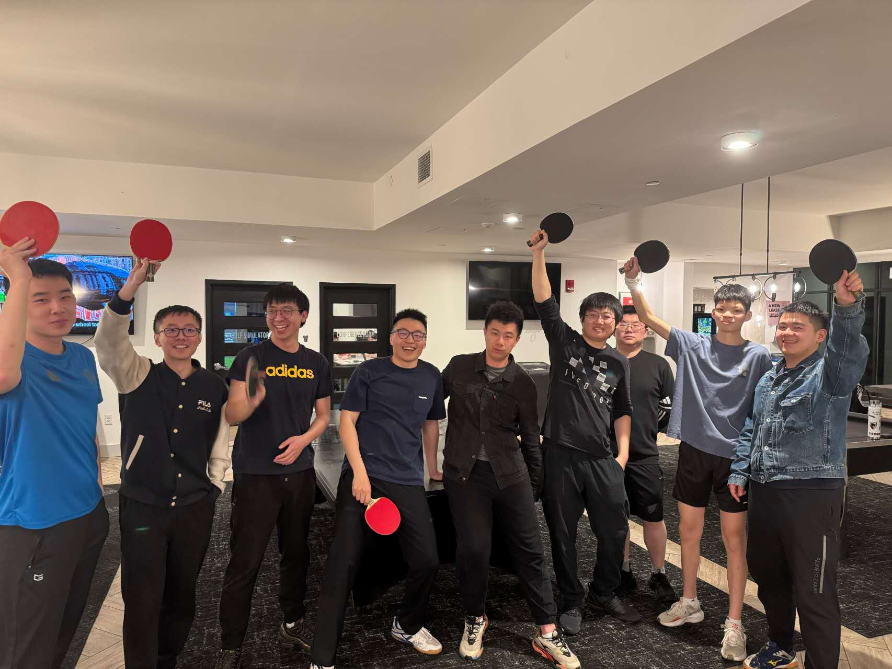
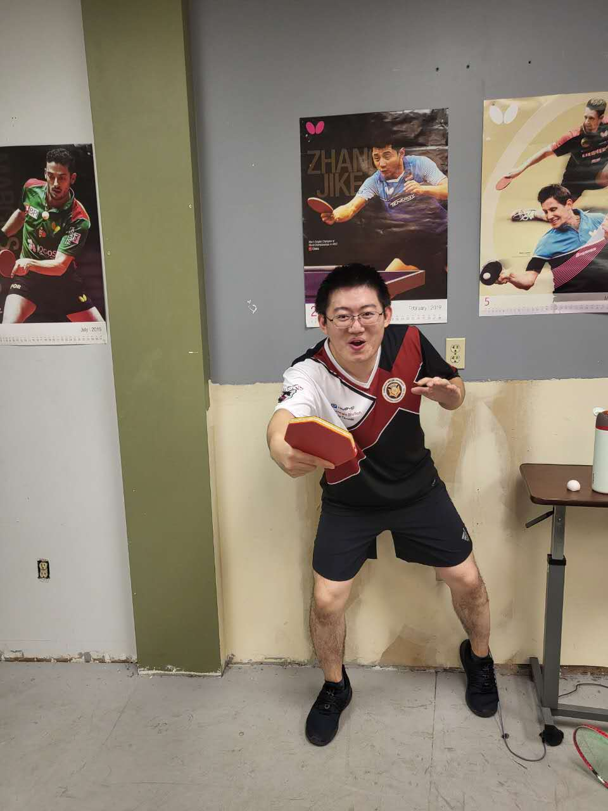
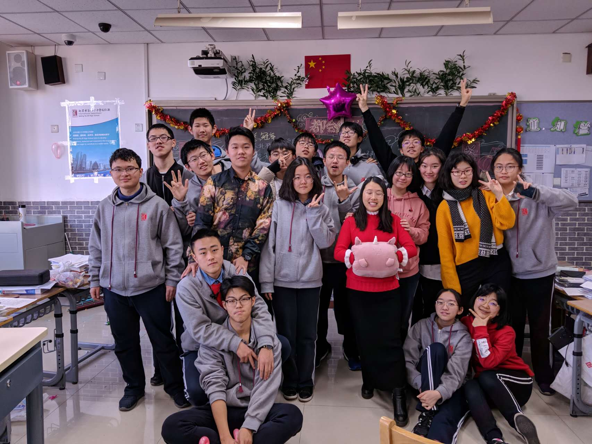
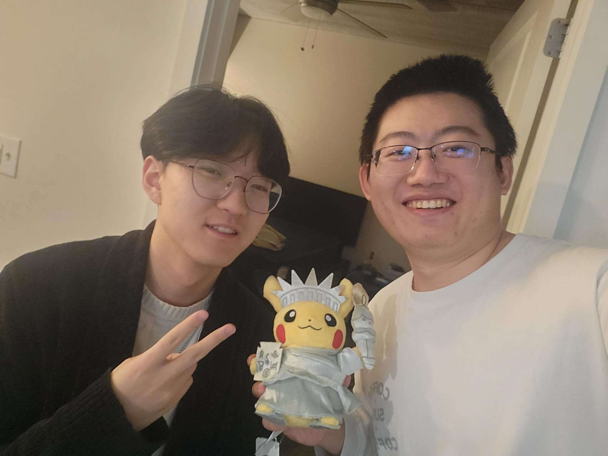
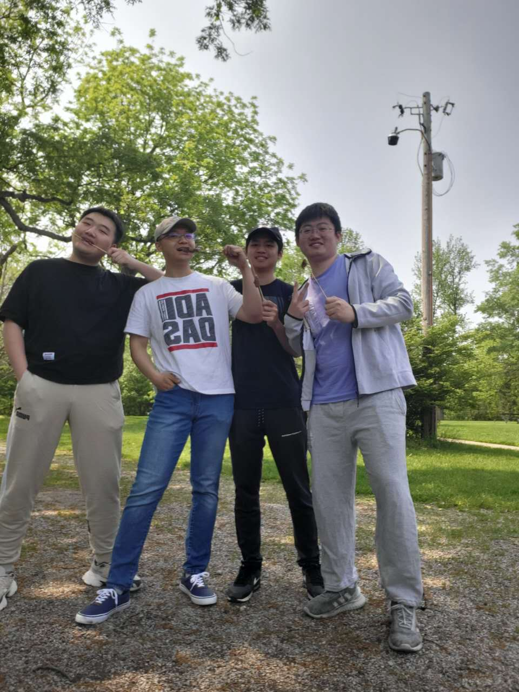
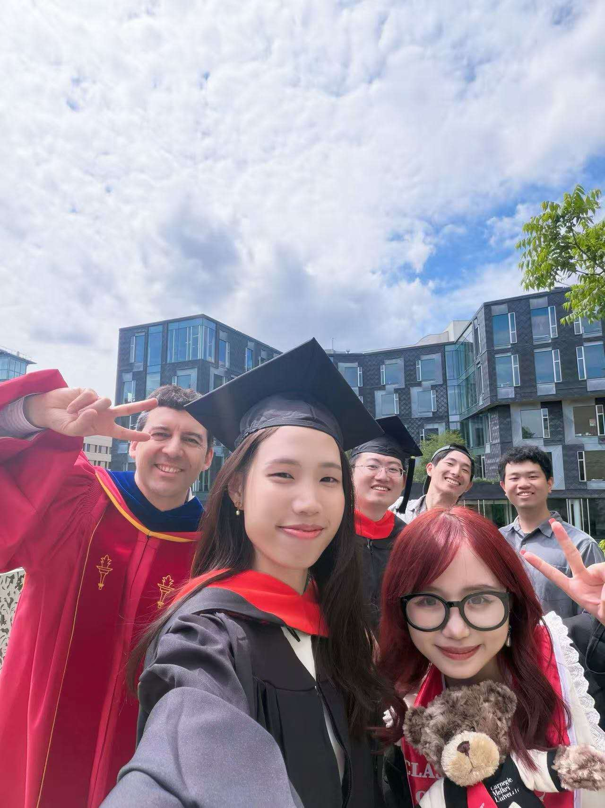
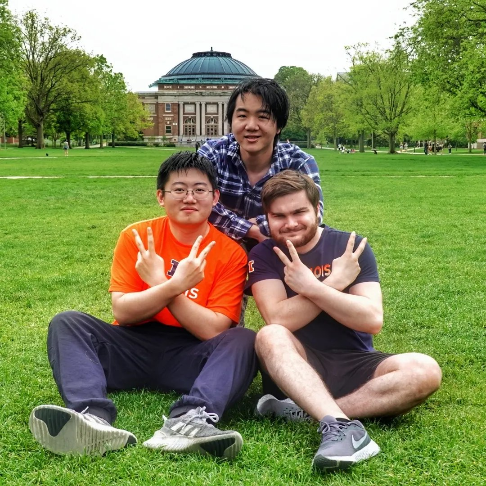
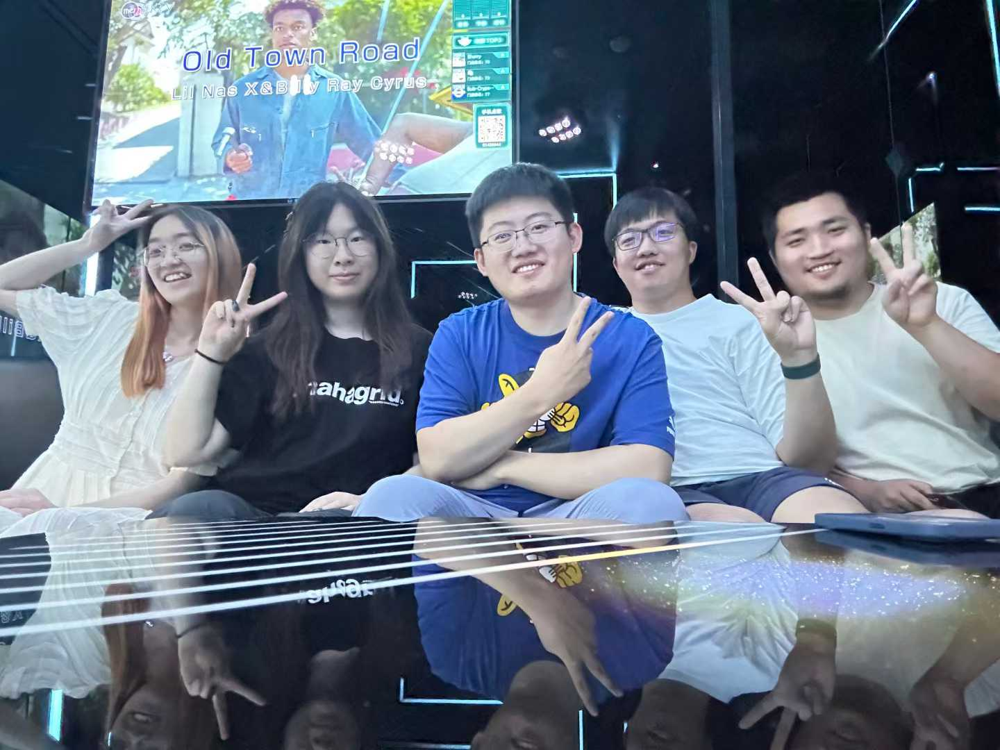
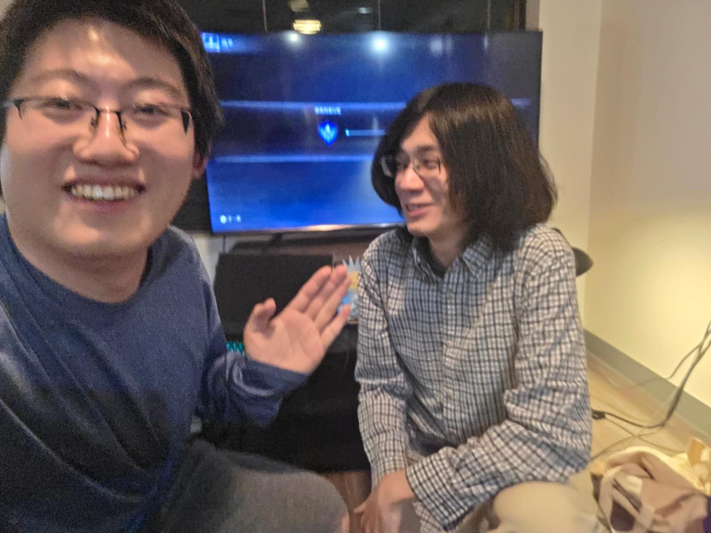
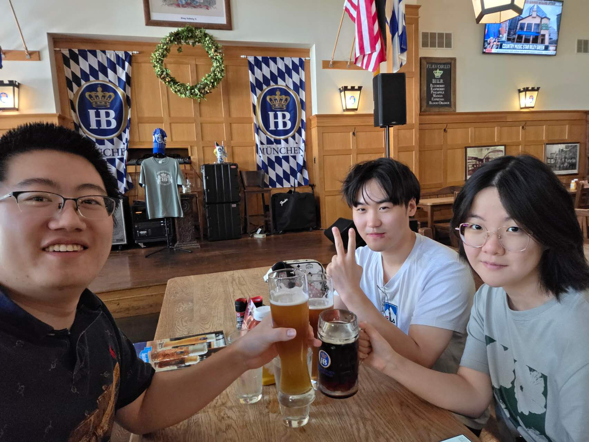

Goal: Build multimodal machine learning systems that jointly reason over text, video, audio, IMU, gaze, and other modalities, learning semantic and affective representations that deepen our understanding of human interaction and turning that understanding into the next generation of multimodal agents.
Research Interest: The intersection of representation learning, multimodal machine learning, signal processing, human interaction, AI agents, graph neural networks, and multimodal LLMs.
Email: zeyang2022 [AT] gmail.com
News
[07/2026] Our paper Hierarchical Quantized Cross-modal Masked Autoencoders for Audio-Visual Emotion Recognition has been accepted as a long paper at the 28th ACM International Conference on Multimodal Interaction (ICMI) 2026!
[07/2026] Our paper Speaker Diarization in Static and Egocentric Videos via Speech-Face Alignment has been accepted as a long paper at the 28th ACM International Conference on Multimodal Interaction (ICMI) 2026!
[05/2026] Graduated from Carnegie Mellon University with an M.S. in Artificial Intelligence Engineering (GPA: 3.94/4.00).
[01/2026] Our paper Contrastive Gated Fusion for Multilingual Speaker Verification, submitted to the ICASSP Grand Challenge GC-6: Face-Voice Association in Multilingual Environments (FAME), has been accepted for inclusion in the ICASSP Workshop Proceedings!
[05/2024] Graduated from the University of Illinois at Urbana-Champaign with a B.S. in Computer Science with Highest Honors (GPA: 3.94/4.00).
Contrastive Gated Fusion for Multilingual Speaker Verification Zeyang Zhang, Katsuhiko Naito, and Hajer Dahmani. 2026.
In ICASSP 2026 - 2026 IEEE International Conference on Acoustics, Speech and Signal Processing (ICASSP), Barcelona, Spain, pp. 21775-21777.
Using RankNet to perform pairwise ranking of an individual's state from their performance, jointly leveraging multiple temporally aligned modalities such as audio, video, IMU, gaze, semantic segmentation, and more.
Reviewer Service
International Conference on Multimodal Interaction (ICMI) 2026
My dog Kevin just turned 12, and he still greets me like a puppy every single day!


I play table tennis at CMU whenever I get the chance, come find me for a match! I also just picked up tennis two months ago, and I am already completely hooked!








My friends over the years, the people who have made all of this so much fun! I love traveling, hanging out with friends, and hunting down great restaurants!